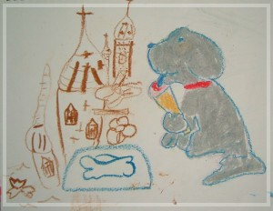

| 庭煒的治療是一段長又令人心疼的日子
•每次發燒都一定要住院 腫瘤發現 黃庭煒，八十二年十月十八日生於美國雪城(Syracuse, NY)，一個與癌症摶鬥三年多的勇敢女孩，家人都叫她英文名字Lily:, 在六歲幼稚園中班結束的時候,八十八年年六月(June 24, 1999)因血尿發現在右腎長了小兒惡性腫瘤(wilm’s tumer),在馬階醫院開刀(開刀前已內出血)作了第一階段約半年的化學治療，醫生說庭煒是第一期腫瘤，治癒率高達90%。 腫瘤第一次復發 八十八年年底化療即將結束前(Nov 19. 1999)又發現在腹部傷口處長了一顆約10元硬幣大的腫塊, 於是在八十八年十一月月 (Nov. 23, 1999)第二次開刀將腫瘤切除並作病理檢查, 確定為Wilm’s tumor後又作了電腦斷層發現原開刀拿掉的位置, 長了多個小腫瘤, 於是第三次開刀取出, 並作第二階段約半年的化學治療, 而且從八十八年十二月十日起開始連續作了12次的腹部大範圍放射線治療(將肝與左腎遮住), 與五次局部放射線治療，雙重的治療讓庭煒的身體經驗到前所未有的虛弱。 腫瘤第二次復發，轉移到肝臟 庭煒從虛弱中慢慢恢復, 生活,飲食與活動量都很好, 未料第二次的化療功課表未做完。八十九年七月二十八日，在一次例行超音波檢查時發現有異, 而後電腦斷層確定腫瘤復發, 在肝臟發現顆約3.8cm tumor, 肝臟旁與腹腔中也有,且有腹水, 病情轉為第四期， 由於這次屬於Rescue級的治療與預期Lily治療後的可能的虛弱與治癒狀況由原先的90%的樂觀急轉為低於30%, 使我們對於這種原先醫生眼中屬於較優性的腫瘤已變得沒有信心, 但在馬階醫院小兒腫瘤的醫療團隊努力下，及醫院各方面的配合與協助下, Lily仍接受了第三階段功課表的治療, 這段治療療程長達一年，共作了九次化學治療、門診與急診次數高達56次，除了每次門診都一定要抽血檢查血球狀況外，每一次化學治療後也幾乎難逃發燒住院的宿命，對庭煒而言，雖然三個星期去一次醫院住院化療，郤是永不止息的打針、抽血、住院！而這期的化療終也有了回饋，庭煒的身體上終於看不到腫瘤，真有說不出的興奮，而庭煒也才稍稍享受了約二個月的快樂時光，頭髮長長了約一公分，臉色也漸紅潤！ 腫瘤第三次復發，腹水，第一次病危 然而九十年五月底的時候，無情的命運又降臨受盡疾病煎熬的庭煒，有一天庭煒突然腹痛，意外發現惡劣的腫瘤竟然復發到肝臟，有腹水，且腹水一天一天的漲大，醫院發出病危通知，她血壓一直下降，心跳快到一分鐘190下，須靠小的氧氣管架在鼻子中，她不吃不喝，肚子又痛，痛到須要打嗎啡及另一種止痛劑才能平息她疼痛的尖叫聲，然而打了嗎啡她就也無法與我們說話，她很累很累，當她醒時，看到庭煒圓潤的臉龐又再度削廋，大大的眼睛透露出絕望的眼神，感覺她內心在哭訴! 庭煒這一次的病危總共住了35天醫院，度過人生第一次生死交關的難題，而庭煒也戰勝了病魔，在另一次嘗試新的化療藥奏效中又再一次的站起來，這一期的化療藥已經是第四階段化學治療，比起以前，與其說庭煒顯得不那麼辛苦，不如說她己習慣這麼強烈的治療，習慣化學治療完的不適與嘔吐，每次住院化療5-6天，對她而言只不過換到醫院這個家住住，除了嘔吐外，身體大致還好，庭煒以為治療順利，然而沒想到惡夢又再度來臨！ 腫瘤第四次復發，轉移到下腹腔，第二次病危 九十年八月庭煒經過了約三個月的化學治療，肝臟的腫瘤雖不見了，郤又轉移至腹腔中，只作了五次化療即因身體不適，病情急轉而下，因腹腔中的腫瘤又大，且腹膜上遍佈著數不清的腫瘤，腹水再次出現，醫院於是又一次發出病危通知，在極端困難中找尋不同以往的化療藥並於八十九年九月開始新一期的化學治療，這第五階段的化學治療似乎是化療藥的最後盡頭了，藥很重，但不得不用，用了得以暫時緩和病情，但無人可以保證腫瘤有一絲希望可以消失，這是非常無耐的事！庭煒一次又一次企盼，每天禱告強壯她的心志，更一分一秒熱情地擁抱她的每一天，經過九次強而重的治療，腹腔中的那一顆腫瘤雖然終於變小變不見，郤又在肚臍上方摸到了一片腫瘤，這樣的情況令我們不堪想像，庭煒連問也不問了，每一次化療完後一段時間，她會報喜不報憂地告訴我們「蟲蟲變小了！」，但是我們都知道下一次化療前蟲蟲一定又變大了！如果無法將腫瘤一次又一次地變小，無疑是被判了死刑，只不過是心裡不願承認罷了!以及不知道那一天是生命的盡頭？！在這一段將近一年的化學治療過程中，由於身體經過長期又重的治療下，她無法正長生產各種血球，經常都要輸血小板、和血紅素，且每一次化療後，她因發燒、長針眼，拉肚子、全身上下一塊塊的瘀血及出血點等各式問題困擾，每一次的問題都需要住院治療，有兩三次還因敗血症而住院，終於庭煒的身體真的累了，在作了第五階段第九次化療後，醫生說這已經是最高劑量的藥了，不能再試，須改換另一種早期用過的化療藥，主要希望能給庭煒各器官能有休息的機會，不玫因葯犬重而壞死，雖然無法控制她的病情，然而這次的化療讓庭煒相當辛苦，腰酸得很厲害，經常要放很熱的熱水袋才得以稍減她的痛苦。 腫瘤轉移到上腹腔，然後又悄然地跑到肺臟，最後奪走她的生命 九十一年六月中，即是庭煒在世的最後的這三個月腹腔中腫瘤不但摸得到，而且愈來愈大，腹水也愈來愈多，小小庭煒不但一面忍耐腹水的疼痛，一面承受腰酸背痛的不適，由於早期用過的化療藥，眼看庭煒進入第三次病危，不得已之下，和醫生商量再加做葯效超重的第五階段用葯，然而由於前9次用葯已把庭煒的器官破壞得很嚴重了，故無法抑制腫瘤，第10次的化療，這一次的劑量，庭煒的身體就再也承受不起了，接著腎功能不好，下肢及腹腔水腫，加上打了碼啡後昏迷意識不清，在一次的嘔吐中嗆到而第一次送入加護病房，第一次無法有父母在旁陪伴，第一次插了鼻胃管抽取胃中液體，口中插了又粗又大的氧氣管，她不能說話，她全身孱弱不堪，既無法翻動自己的身體，累的眼睛都無力睜開，可是她的腦筋郤清醒，她是深深不願離開她熱愛的人世，但郤無法挽回她的生命，和朝思夢想的健康，在加護病房短短的7天中，腫瘤又悄然地跑到肺臟，血氧量有減無增，加深了她的病情，最後走前一晚，看到庭煒手握著拳頭，捶著自己的胸，發出微弱的聲音告訴媽媽，「我好痛!」其實庭煒雖然身體虛弱不堪，但是她頭腦郤非常清醒，這是最最讓人不忍的地方！若非是她的忍耐已到了極點！即使看著她受苦折難三年多，又有誰能夠真正瞭解這孩子的痛苦? 最後，在九十一年八月十八日凌晨六點，在優美的詩歌歌聲中，來不及道別，庭煒終打完這一場人生美好的仗!為了紀念庭煒小小年紀郤有著無限的毅力與抗癌勇氣，樂觀地面對自己的疾病，用盡自己的全力，嘗試各種只要讓她好起的方法，默默接受大大小小的治療與生命安排，熱愛生活及她的家人及朋友、同學及老師，她的勇氣足為世人的楷模! 她的樂觀精神足以鼓勵人心!她的畫作將伴隨畫展繼續傳揚庭煒不凡而短暫的一生。 |
|  |
•吃冰淇淋的小狗－－生病使得庭煒的飲食有所限 制，只有在「特別可憐的時候」，才可以嚐一嚐冰淇淋的甜滋味。看這小狗舔冰淇淋的幸福模樣，還真讓人垂涎！連地上的新鮮骨頭都可暫時擺一邊！ |